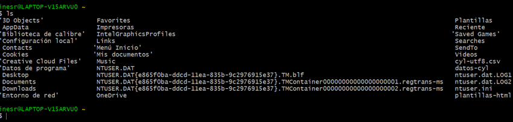
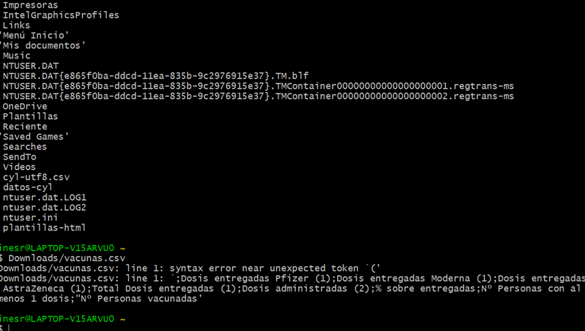
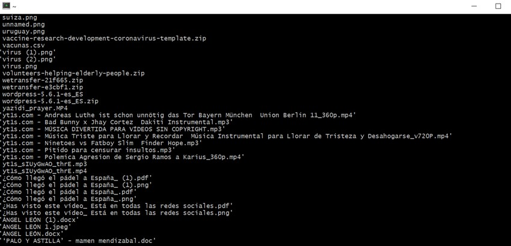

Periodismo de Datos II
Máster en Periodismo Digital y de Datos
Actividad Dirigida 3
Datos y visualizaciones
En primer lugar, utilizamos el comando ls, que nos sirve para listar el contenido del directorio. Es decir, nos aparecerá en la consola el directorio de usuario. En este caso, el csv con los datos sobre la vacunación en España están en ‘Descargas’, y recibe el nombre de ‘vacunas.csv’. Tenemos que llegar hasta allí.
  
Una vez hemos llegado hasta aquí, haremos una exploración del archivo. Para ello será imprescindible el comando wc. Con él podremos saber cuántas líneas, palabas y caracteres tiene el documento. También nos dará la información sobre cuántos bytes pesa. Asimismo, otros comandos como file nos dirán qué tipo de archivo es; du, para saber cuánto pesa de forma legible; head, para ver la cabecera o las diez primeras filas.
Una vez aplicados estos comandos veremos que el archivo tiene 23 líneas, 2023 caracteres, 65 palabras y pesa 2032 bytes.
Otra información de interés es saber si la cabecera o las primeras líneas del archivo coinciden. Si ponemos head -1 nos aparece: Dosis entregadas Pfizer, Dosis entregadas Moderna, etc. Por lo tanto, esta primera línea corresponde a la cabecera del csv. Si ponemos head-10, nos aparecerán las primeras 10 líneas. También vemos que coinciden. Además, cada valor está separado mediante el punto y coma (;). Cabe añadir que en nuestro archivo, sí se ven los caracteres que contienen tildes.
Una vez hemos explorado nuestro archivo y conocemos cuáles son sus principales características, tenemos que “modificarlo” para arreglarlo y que nos sea más fácil trabajar con él para hacer la visualización. Para nuestro gráfico, tan solo nos interesan las cuatro primeras columnas y las filas 2, 10 y 15, puesto que simplemente se quiere hacer una comparativa entre los diversos tipos de vacunas en Andalucía, Cataluña y Madrid. Para ello, empleamos el comando cut.
Una vez tenemos los datos que queremos, procederemos a hacer la visualización mediante Datawrapper. En este caso, he escogido una gráfica de barras agrupadas. De esta forma, se podrá comparar las dosis recibidas de las vacunas en cada comunidad. En cuanto a los colores, se ha seleccionado una gama azules, aunque se diferencian unos de otro claramente.
Por último, una vez está el gráfico elaborado, hay que llevarlo a nuestro html. Para que respete todas las propiedades, como por ejemplo pasar el cursor por encima y que salgan los porcentajes, es necesario embeber el iframe. Este sería el resultado final.
Sobre mí
Soy Inés Romero Caro, tengo 22 años y me graduadé en Periodismo por la Universitat Jaume I de Castelló. Soy una persona apasionada de la comunicación digital, la cultura multimedia y las redes sociales. Por ello, estoy estudiando un Máster en Periodismo Digital y de Datos en la Universidad Nebrija, en Madrid. Además, estoy haciendo mis prácticas en la web de noticias de Onda Cero.
Me gusta plasmar historias a través de nuevas narrativas creativas, pero que emocionen y hagan partícipe a todo aquel que las lea. Mi objetivo profesional es adentrarme en el nuevo panorama mediático, conectar con él y sacarle el máximo partido.
Contacto
Si quieres contactar conmigo, rellena este formulario y mándame un mensaje.